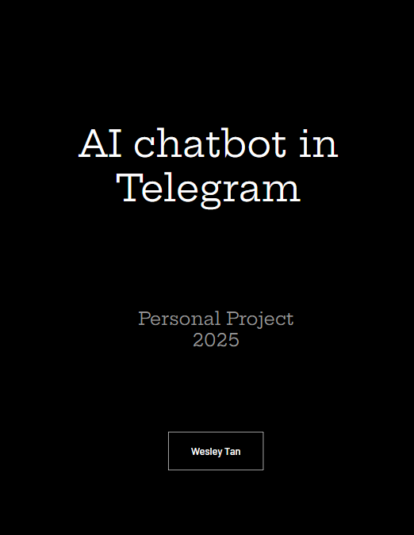

Back to projects
Reports

AI in Telegram
Python chatbot · 2025
Built a Telegram bot that sends messages to DeepSeek R1 through OpenRouter and returns the replies in Telegram.

Python chatbot · 2025
Built a Telegram bot that sends messages to DeepSeek R1 through OpenRouter and returns the replies in Telegram.